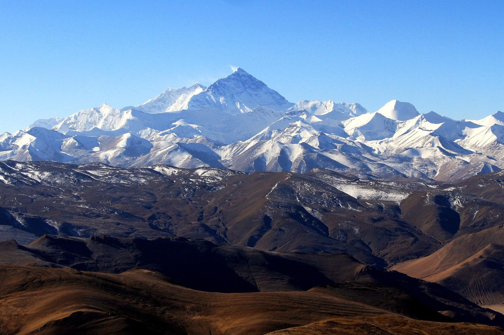
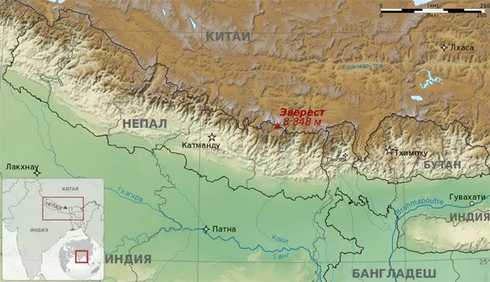

Джомолунгма или Эверест или Сагарматха — самая высокая гора мира. Да-да, Джомолунгма и Эверест - это одно и тоже. Не знаете, где находится Джомолунгма? Сообщаем, гора входит в состав хребта Махалангур-Гимал в горной системе Гималаи, на границе Непала и Тибета. Однако сама ее вершина расположена на территории Китая. Рядом с Эверестом расположено еще несколько гор выше 7 километров - Нупцзе, Чангзе, в том числе еще один восьмитысячник - Лхоцзе.

Гора Джомолунгма (Эверест) - высота и факты
Высота Эвереста - 8848 метров, причем последние 4 метра сплошной лед. Джомолунгма "построена" природой в форме трёхгранной пирамиды, южный склон более крутой. С массива во все стороны стекают ледники, оканчивающиеся на высоте около 5 км. Гора Джомолунгма частично входит в состав непальского национального парка Сагарматха. На вершине Джомолунгмы бывают сильнейшие ветра, дующие со скоростью до 200 км/ч. Температура на вершине Эвереста никогда не поднимается выше нуля. Средняя норма в январе равна -36 °C, но может ночью упасть до -60. В июле воздух прогревается до -19. На вершине Джомолунгмы бывают сильнейшие ветра, дующие со скоростью до 200 км/ч. Температура на вершине Эвереста никогда не поднимается выше нуля. Средняя норма в январе равна -36 °C, но может ночью упасть до -60. В июле воздух прогревается до -19.
Дальше вы узнаете какие у Джомолунгмы есть еще варианты названия и что они означают в переводе с местных языков.В переводе с тибетского "Джомолунгма" означает «Божественная (qomo) Мать (ma) жизни (lung – ветер или жизненная сила)», названа так в честь бонской богини Шераб Чжаммы. С непальского имя вершины «Сагарматха» означает «Мать богов». Английское название которое получила Джомолунгма - Эверест (Mount Everest) присвоено в честь сэра Джорджа Эвереста, руководителя геодезической службы Британской Индии в 1830-1843 годах. Это название предложил в 1856 году преемник Джорджа Эвереста Эндрю Во, одновременно с публикацией результатов своего сотрудника Радханата Сикдара, который в 1852 году впервые измерил высоту «Пика XV» и показал, что он является высочайшим во всём мире.
Эверест: история восхождений
Первое восхождение на Джомолунгму было совершено 29 мая 1953 года шерпом Тенцингом Норгеем и новозеландцем Эдмундом Хиллари через Южное седло. Они пользовались кислородными приборами. В последующие годы к покорению горы присоединились альпинисты из разных стран мира — Китай, США, Индия, Япония, Италия. Весной 1975 года Джомолунгма, фото которой вы посмотрите дальше, впервые штурмуется женской экспедицией. Первой женщиной, покорившей Джомолунгму, стала японская альпинистка Дзюнко Табэй (1976). Первой полькой и первой европейкой, поднявшейся на вершину, стала Ванда Руткевич (1978). Первой россиянкой, достигшей вершины, стала Екатерина Иванова (1990). В мае 1982 года 11 участников советской экспедиции альпинистов покорили Эверест, поднявшись по считавшемуся ранее непроходимым юго-западному склону, причём 2 восхождения совершены ночью. До этого ни один из альпинистов, входивших в состав экспедиции, не поднимался выше 7,6 км.В последующие годы, снова по классическому пути первовосходителей, на Эверест поднимаются альпинисты Великобритании, Непала, США, Южной Кореи, Австрии и других стран.Как правило, гора Джомолунгма покоряется альпинистами в кислородных масках. На высоте 8 км воздух разрежённый, и дышать очень трудно. Первыми без кислорода достигли вершины итальянец Рейнхольд Месснер и немец Питер Хабелер в 1978 году.В 2001 году супружеская пара из Франции, Бертран и Клер Бернье, слетела вниз с вершины на планёре-тандеме.В мае 2004 года итальянец Анджело ДАрриго впервые в истории воздухоплавания совершил полёт на дельтаплане над вершиной высочайшей горы мира. 14 мая 2005 года лётчик-испытатель Дидье Дельсаль успешно посадил вертолёт Eurocopter AS 350 Ecureuil на вершину горы. Это был первый случай подобной посадки. В 2008 году 3 парашютиста приземлились на вершину, выпрыгнув с самолёта, летящего на высоте чуть менее 9 км (на 142 м выше самой верхней точки горы).
Джомолунгма и горнолыжные спуски
Первая попытка спуститься с вершины посредством горных лыж была предпринята в 1969 году японцем Миура. Она закончилась не так, как он планировал; Миура чуть не свалился в пропасть, но чудом сумел спастись и остался жив. В 1992 году по склону Эвереста на лыжах спустился лыжник, француз Пьер Тардевель. Он съехал с южной вершины, расположенной на высоте 8571 м, и преодолел 3 км за 3 часа. Через 4 года итальянский лыжник Ханс Каммерландер спустился с высоты 6400 м по северному склону. В 1998 году француз Кирил Десремо совершил первый спуск с вершины на сноуборде. В 2000 году словенец Даво Карничар съехал с Джомолунгмы на горных лыжах.
А вот где находится Джомолунгма на карте.
